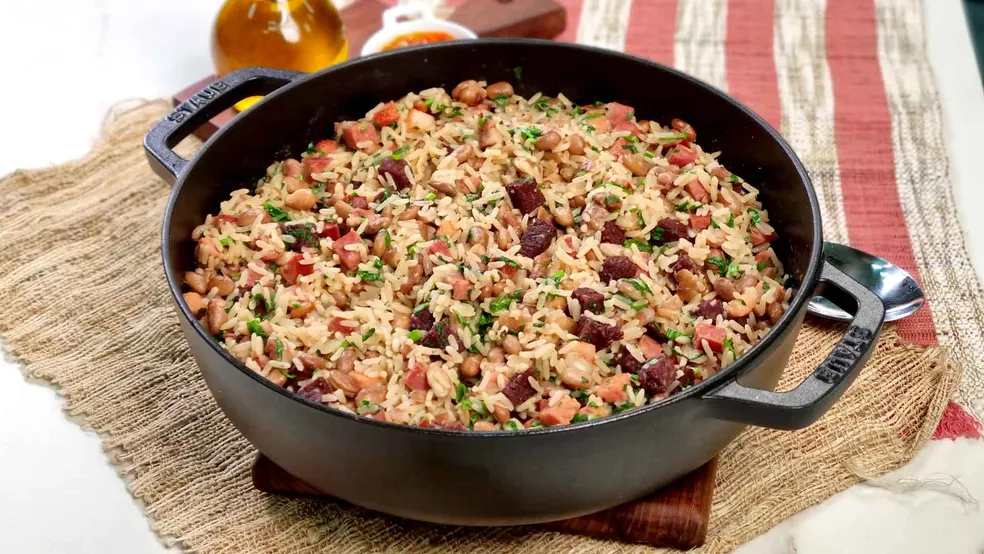
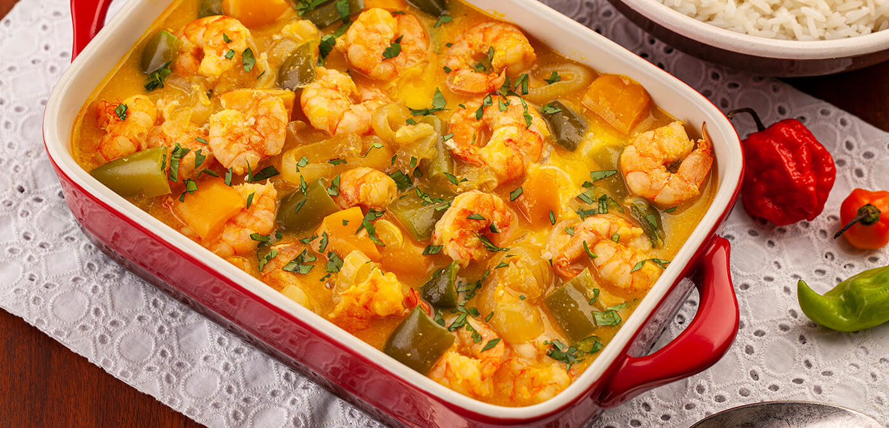
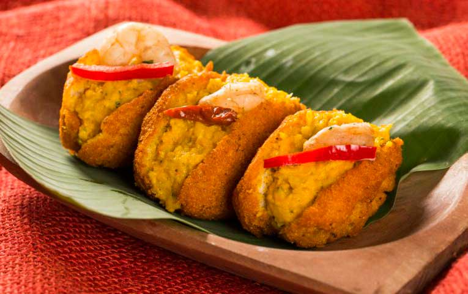
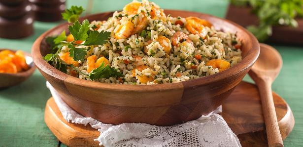
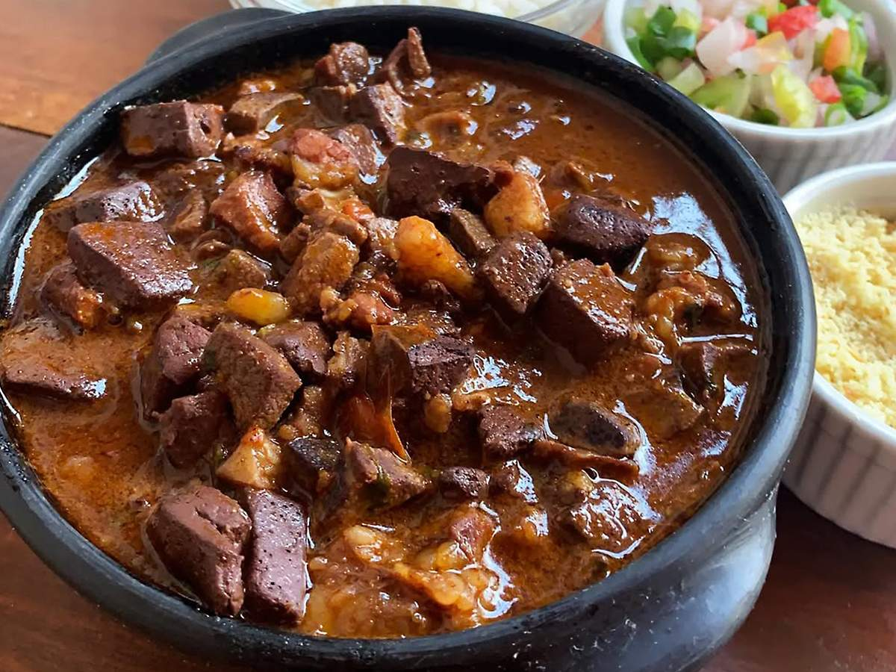

Carne de Sol
Um suculento prato que ressalta o sabor da carne bovina. Saboreie uma deliciosa carne de sol com tiras de cebola e explore seu sabor único e autêntico.
Um suculento prato que ressalta o sabor da carne bovina. Saboreie uma deliciosa carne de sol com tiras de cebola e explore seu sabor único e autêntico.

Uma deliciosa receita que une nossos queridinhos da gastronomia brasileira: arroz e feijão com um toque único que o faz ser apreciado por todo nosso país!

Famosa por seu sabor marcante do azeite de dendê e leite de coco, onde postas suculentas de peixe mergulham em um leve toque cítrico de limão.

Crocante por fora e macio por dentro. Feito de massa de feijão-fradinho frita no azeite de dendê, garante uma explosão de sabores e tradição a cada mordida.

Um clássico que une o sabor marcante do cuxá, feito com vinagreira, ao arroz soltinho e a temperos especiais.

Preparado com miúdos suínos e temperos marcantes. Um prato saboroso que aquece o paladar com seu caldo rico e bem encorpado.